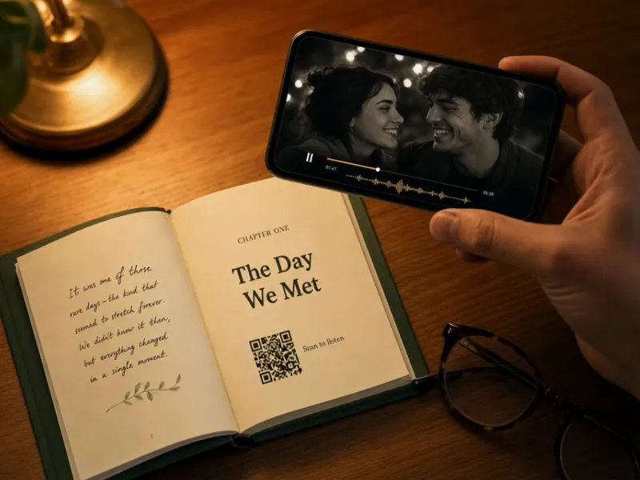
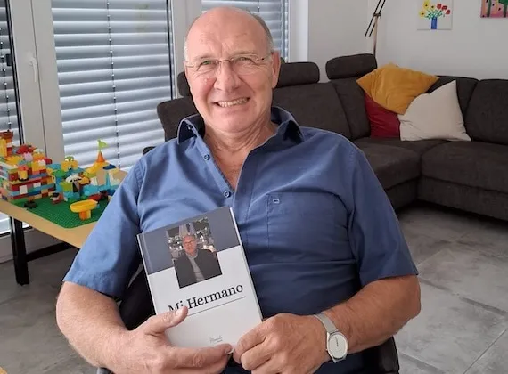
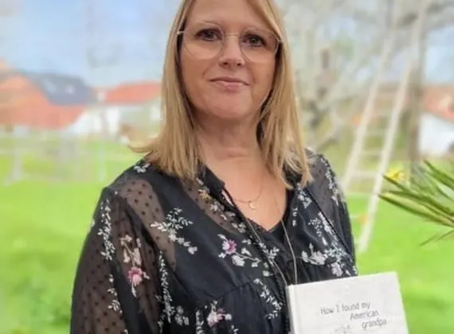

几分钟即可开始
选择书型、赠送对象与节奏，系统会准备好适合的引导问题。
童年 · 旅程 · 爱情 · 家庭 · 一生
用文字、语音或视频轻松讲述。我们把故事装订成精装书，并让真实的声音与影像通过二维码一直留在书中。
★★★★★ 4.8 分 · 已帮助数千个家庭 · ¥699 起
你拥有回忆，也有想问的问题。缺少的，只是一种不催促、不复杂、可以慢慢开始的方法。
看看 Meminto 如何保存故事 →受到世界各地家庭的喜爱
为每个重要时刻而生
选择此刻最想珍藏的主题，我们会带你找到合适的那本书。
使用方式
选择书型、赠送对象与节奏，系统会准备好适合的引导问题。
可以打字、录音、上传视频，也可以让 Meminto 定期打电话来提问。
邀请家人添加照片、不同视角和那些只有他们记得的小细节。
故事自动排版成全彩精装书，声音和视频通过二维码继续存在。
小时候，你最喜欢在哪里玩到天黑？
哪一句来自父母的话，一直陪着你？
如果能重回人生中的一天，你会选择哪一天？
适合每一种故事
不擅长写作，也完全没关系
用最熟悉的语言自然讲述，我们帮你整理成文字。

扫描书页二维码，就能再次听见当时的语气、笑声与声音。
保留你的表达与个性，只让文字更顺畅、更容易阅读。
真实家庭，真实故事
“每周只回答一个问题，我就这样写下了自己的一生。这件事比想象中轻松，也比想象中有意义。”
Werner · 德国 · 正在写第二本书


常见问题
不需要。你可以像聊天一样说出来，Meminto 会把录音转成文字，并提供可选择的轻度润色。
他们可以通过自动电话回答问题，也可以由家人协助上传录音和照片。
没有固定节奏。你可以集中完成，也可以用最长两年的时间，每周回答一个问题。
可以。纸质书中的二维码会连接到对应的录音或视频，让故事不仅能读，也能听见和看见。
现在开始，还来得及问